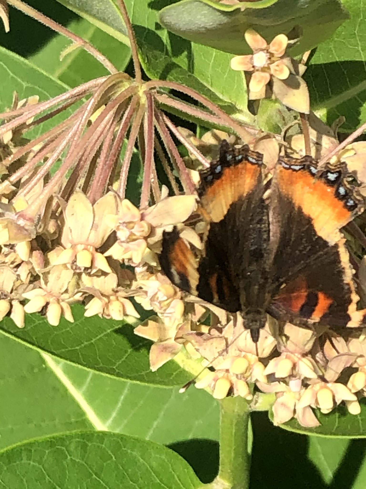
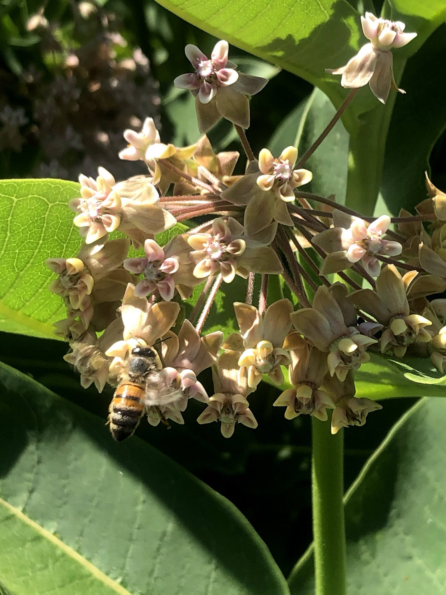
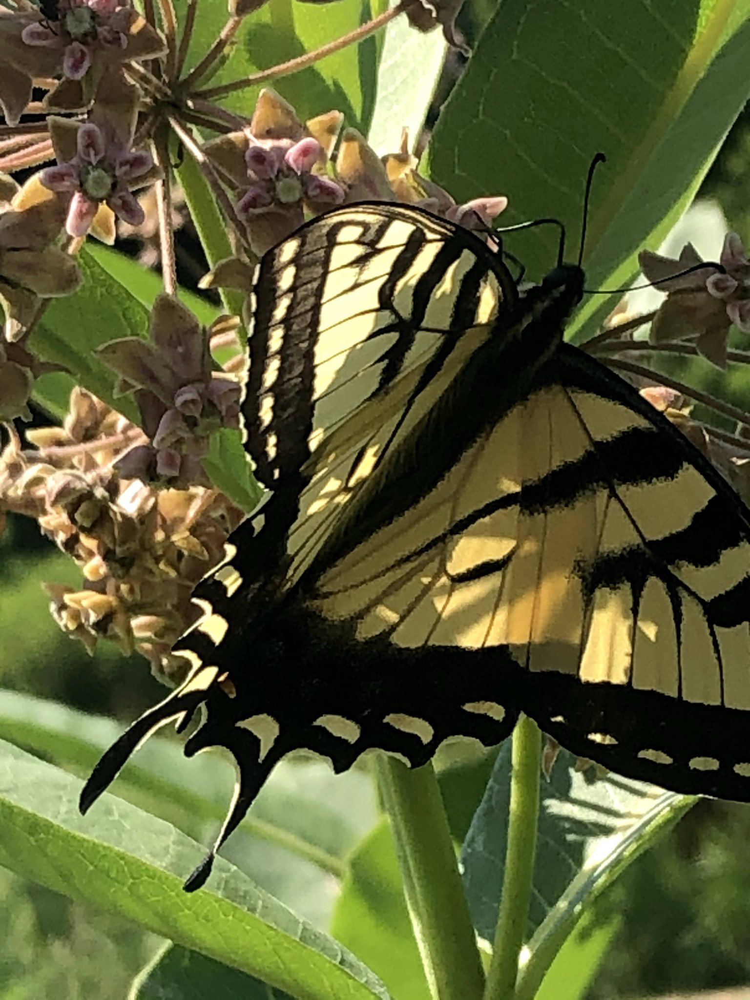
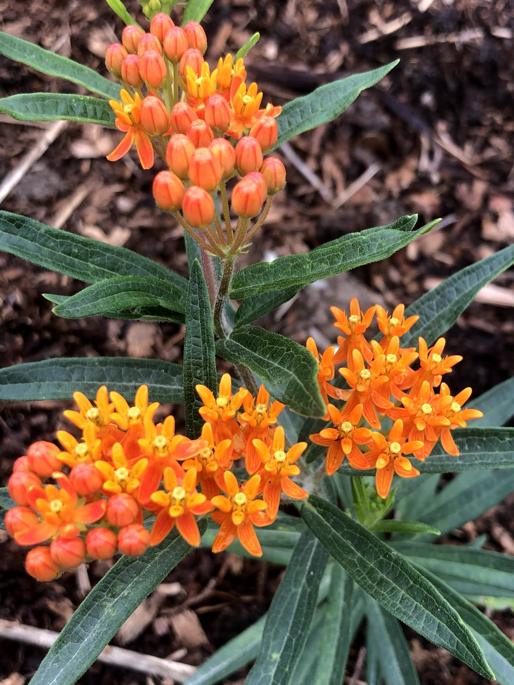
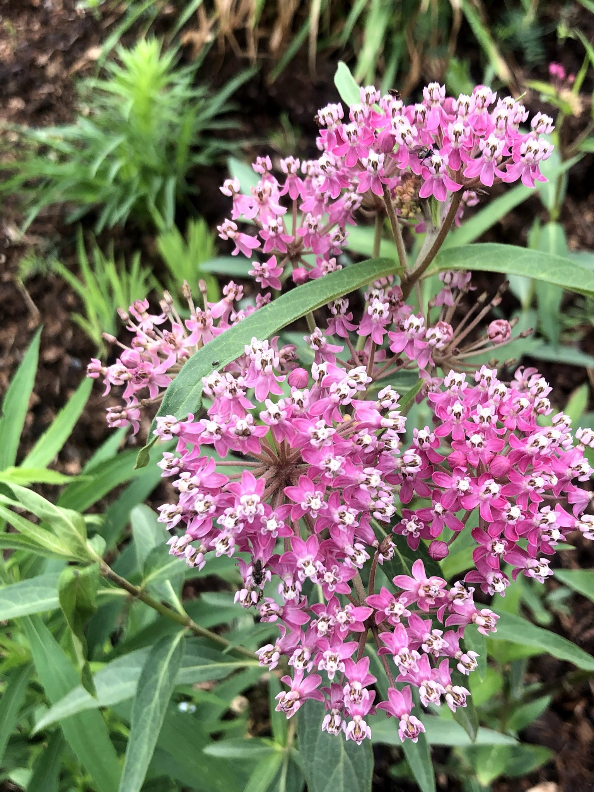

July 2020
Asclepias: Syriaca, Incarnata, and Tuberosa
It’s the beginning of the summer and the garden is in it’s prime. Echinops, echinacea, monarda, filipendula, and more, are all providing essential food to pollinators. All of these plants were carefully selected for their location, with considerations to size, soil, and benefits to wildlife. I anticipate their arrival each year with hopes that they are more prolific than the previous year and have some baby I can transplant to another are of the garden. However when I walk my garden, it’s the blooms that I didn’t intentionally plant that I get most excited about.
One unintentional, but not surprising bloom is that of Ascelpias syriaca, common milkweed. This glorious native has really been a big hit for a variety of butterflies, native bees, and beetles. I’m always amazed at the ability of this plant to feed so many different insects at the same time. I’ve even seen a few large bites from leaves, the likely culprit are the deer who browse the garden at night. Transplanting this bloom is tough, the taproot doesn’t like to be disturbed. I found this out first hand, when I attempted to moved several off shoots, only one of which took. I don’t think you need to purchase this plant however. Milkweed seeds easily and loves to take over a garden bed, so grab a milkweed pod in the fall and shake some of those seeds into your garden. It may not end up in the exact spot you chose, however you will likely get some great milkweed blooms for years to come.



Milkweed is native to North America, with over 70 varieties, you can basically grow this anywhere. The sweet smell and the entomological interest alone, entice me to just let it grow wherever. I never pull it from a garden bed- even in the raised vegetable garden! Admittedly, one stand of milkweed was not enough. I needed more, so off to the local nurseries (Horsford Nursery and Red Wagon) I went! Asclepias tuberosa, butterfly weed, was a great addition. Not only did I get 10 of these plants, I planted them in my home garden and at the Butterfly Garden at the Quinlan Bridge. Ascleipas tuberosa is listed on Vermont’s threatened and endangered plant list, how could this be? This bright orange plant needs open fields and woods to survive and the famous Monarch butterfly relies on butterfly weed as a food source. When mature, Ascleipas tuberosa grows to be about 2 feet in height and not much wider.

Another intentional addition, Asclepias incarnata, has been a lovely alternative variety of milkweed. While this is a variety of milkweed native to the Northeast, I don’t see the same interest from pollinators. Incarnata is a little less showy, it has slender lance-shaped tapered leaves and a smaller flower head. I look forward to seeing how this plant fills out our new garden bed.

Filed in the garden journal · July 2020